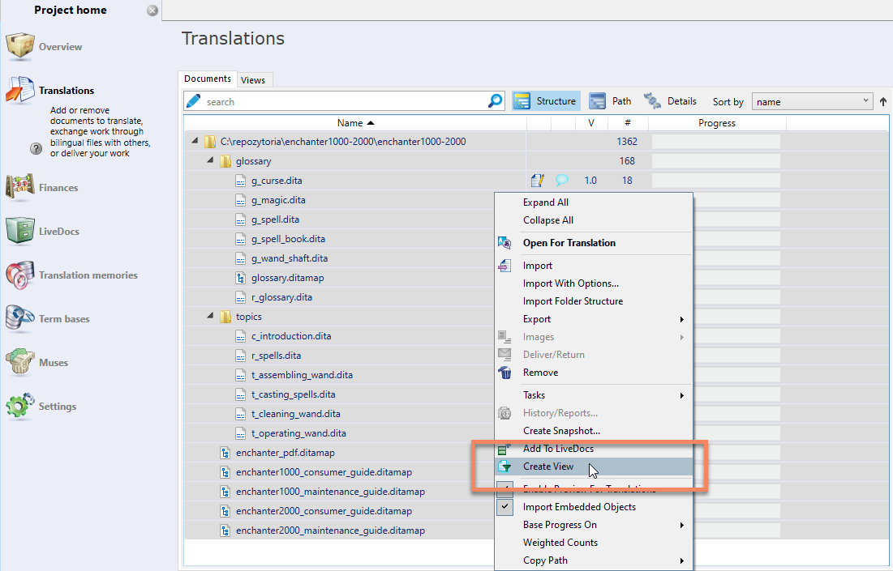
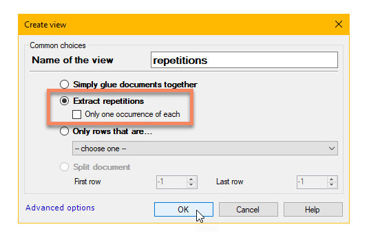
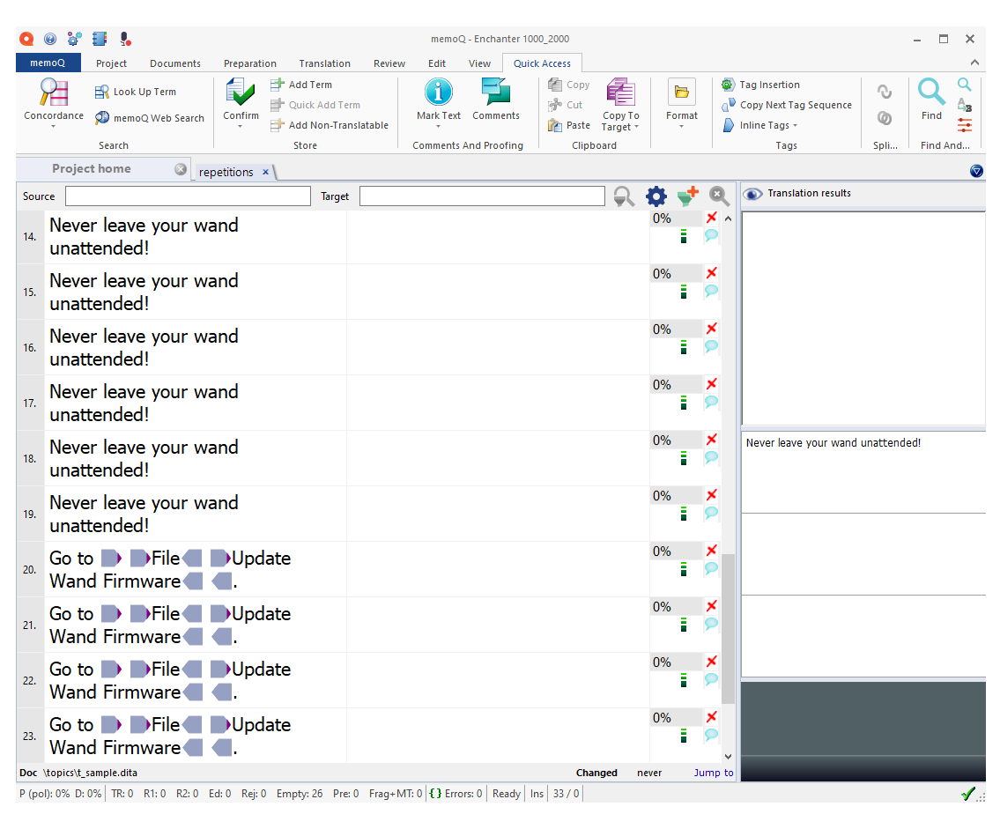

Learn how to simplify your translation process in memoQ by creating a view containing
only repetitions.
If your DITA project contains a lot of repetitive content, it may be useful to
include all repetitions in one view. In order to create a view containing all
repetitions, follow these steps:
Go to Project home > Translations and select all files.
Right-click the files and choose Create View.

In the Create view dialog, enter the Name of
the view, select Extract repetitions, and
click OK.

You can work on a view containing all repeating segments in
your project.
